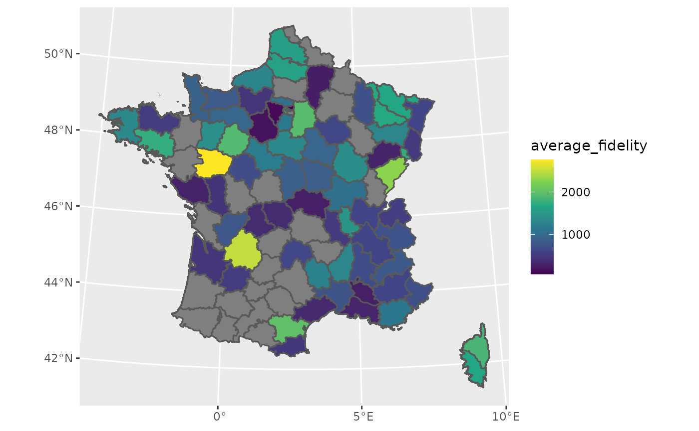

The database fakes an after-sale client database for a Phone company. There is:
a client database with all characteristics of the clients.
a ticket database which contains all calls to the after-sale service of some clients having problems
Ticket centered dataset with already joined client characteristics
fake_ticket_client(vol = 10)
#> old-style crs object detected; please recreate object with a recent sf::st_crs()
#> # A tibble: 10 × 25
#> ref num_client first last job age region id_dpt departement
#> <chr> <chr> <chr> <chr> <chr> <dbl> <chr> <chr> <chr>
#> 1 DOSS-AMQN-002 79 Jovan O'Ke… Gene… 22 Poito… 79 Deux-Sèvres
#> 2 DOSS-NCKJ-010 69 Miss Lean… Emer… 68 Picar… 60 Oise
#> 3 DOSS-GPBE-009 120 Odell Stok… Engi… 24 Bourg… 89 Yonne
#> 4 DOSS-GRLN-001 31 Loren Lars… NA NA Midi-… 12 Aveyron
#> 5 DOSS-LEPJ-004 59 Maybelle Maye… Furt… 18 Midi-… 65 Hautes-Pyr…
#> 6 DOSS-DUCL-005 118 Jamarion Ober… Engi… 18 Corse 2A Corse-du-S…
#> 7 DOSS-OCED-003 77 Lee Scha… Admi… NA Lorra… 57 Moselle
#> 8 DOSS-KXSJ-007 65 Demetric Auer Cont… 21 Auver… 63 Puy-de-Dôme
#> 9 DOSS-UITD-006 141 Wilfrid Harv… Educ… 53 Langu… 48 Lozère
#> 10 DOSS-SHKL-008 182 Addyson Nien… Earl… 65 Midi-… 81 Tarn
#> # … with 16 more variables: cb_provider <chr>, name <chr>, entry_date <dttm>,
#> # fidelity_points <dbl>, priority_encoded <dbl>, priority <fct>,
#> # timestamp <date>, year <dbl>, month <dbl>, day <int>, supported <chr>,
#> # supported_encoded <int>, type <chr>, type_encoded <int>, state <fct>,
#> # source_call <fct>- Separate tickets and client databases
tickets_db <- fake_ticket_client(vol = 100, split = TRUE)
#> old-style crs object detected; please recreate object with a recent sf::st_crs()
tickets_db
#> $clients
#> # A tibble: 200 × 14
#> num_client first last job age region id_dpt departement cb_provider
#> * <chr> <chr> <chr> <chr> <dbl> <chr> <chr> <chr> <chr>
#> 1 1 Solomon Heaney Civi… 53 Prove… 83 Var Diners Clu…
#> 2 2 Karma William… Scie… 81 Rhône… 07 Ardèche VISA 13 di…
#> 3 3 Press Kulas Anim… NA Langu… 30 Gard NA
#> 4 4 Laken McDermo… NA NA Prove… 05 Hautes-Alp… NA
#> 5 5 Sydnie Jaskols… Hort… 30 Centre 41 NA NA
#> 6 6 Clayton Runolfs… Comm… NA Basse… 14 Calvados Diners Clu…
#> 7 7 Roberta Purdy-W… Fina… 60 Bourg… 21 Côte-d'Or NA
#> 8 8 Dr. RonaldM… Astr… 30 Centre 37 Indre-et-L… NA
#> 9 9 Miss Alondra… Occu… 18 Rhône… 74 Haute-Savo… Diners Clu…
#> 10 10 Vernice Ondrick… Clin… 19 Prove… 05 Hautes-Alp… NA
#> # … with 190 more rows, and 5 more variables: name <chr>, entry_date <dttm>,
#> # fidelity_points <dbl>, priority_encoded <dbl>, priority <fct>
#>
#> $tickets
#> # A tibble: 100 × 10
#> ref num_client year month day timestamp supported type state
#> <chr> <chr> <dbl> <dbl> <int> <date> <chr> <chr> <fct>
#> 1 DOSS-GFEL-0028 1 2015 11 27 2015-11-27 Non Insta… Term…
#> 2 DOSS-UWYV-0016 22 2019 9 18 2019-09-18 Non Insta… Atte…
#> 3 DOSS-DKFC-0073 9 2019 10 23 2019-10-23 Non Insta… Term…
#> 4 DOSS-SAYJ-0047 8 2019 11 7 2019-11-07 Non Box Atte…
#> 5 DOSS-GSMZ-0080 30 2019 11 24 2019-11-24 Oui Insta… Inte…
#> 6 DOSS-UIOZ-0085 10 2019 12 6 2019-12-06 Oui Insta… Atte…
#> 7 DOSS-DSMI-0065 37 2020 1 3 2020-01-03 Non Ligne Atte…
#> 8 DOSS-JOYV-0029 37 2020 2 23 2020-02-23 Non Box Atte…
#> 9 DOSS-WPSG-0013 24 2020 3 1 2020-03-01 Non NA En c…
#> 10 DOSS-NHFG-0036 12 2020 3 18 2020-03-18 Non Insta… Atte…
#> # … with 90 more rows, and 1 more variable: source_call <fct>- Explore datasets
ggplot(tickets_db$clients) +
aes(x = entry_date, y = fidelity_points) +
geom_point() +
geom_smooth()
#> `geom_smooth()` using method = 'loess' and formula 'y ~ x'

- Join with internal {sf} spatial dataset
fra_sf. {sf} package must be loaded.
clients_map <- tickets_db$clients %>%
group_by(id_dpt) %>%
summarise(
number_of_clients = n(),
average_fidelity = mean(fidelity_points, na.rm = TRUE)
) %>%
full_join(fra_sf, by = "id_dpt") %>%
st_sf()
#> old-style crs object detected; please recreate object with a recent sf::st_crs()
ggplot(clients_map) +
geom_sf(aes(fill = average_fidelity)) +
scale_fill_viridis_c() +
coord_sf(
crs = 2154,
datum = 4326
)